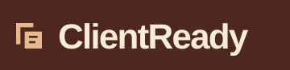
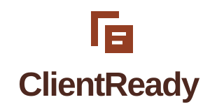

The aligned sheets system.
User-selected concept 02, chosen October 9, 2026 with “02吧”. No rationale was supplied. All developed variants now use Aligned sheets; original sketches remain in the concept gallery. Wordmarks retain editable system-font text. Full-team and real-device review remain unrecorded.



Download SVG



Download SVG